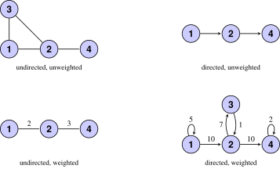
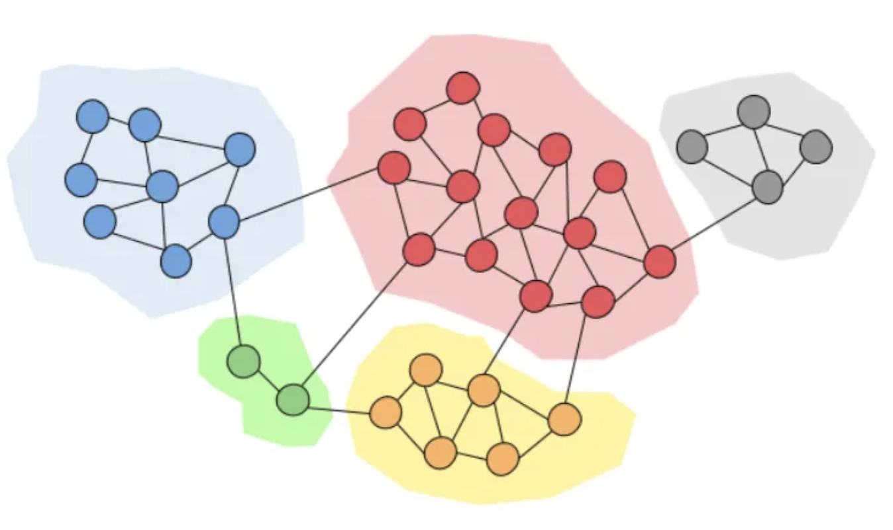
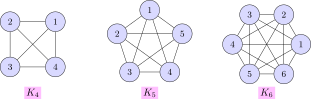
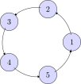
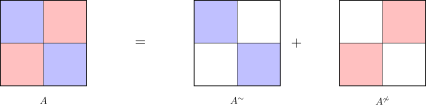

Spectral methods and SDP relaxations for community detection
AIDAMS – S7
Guillaume Lecué

Introduction
The community detection problem (1/2)
- Nodes are people; an edge is a connection (messages, friendship, collaboration).
- Goal: find groups of nodes that are more densely connected to one another than to the rest of the graph.
- These groups may be groups of friends, or people who share interests.
- Once the communities are found, we may:
Look for influencers and send them advertisements, or approach them directly.
Understand the common features of the nodes inside this community to understand how the community was created and what share the people inside of it.
The community detection problem (2/2)

Idea: density, not just connectivity
A community is not a connected component. It is a set of nodes with a higher density of internal edges than of edges leaving the set.
What is a graph?
Definition (graph)
A graph is a pair \((V,E)\): \(V\) is the set of nodes, and \(E\subset V\times V\) is the set of edges.
A weighted graph is a triple \((V,E,W)\) with \(W\in\R^{|V|\times|V|}\). The entries of \(W\) are the weights.
- Undirected graph: \((i,j)\in E\) implies \((j,i)\in E\).
- Undirected weighted graph: the graph is undirected and \(W=W^\top\).
- Four classical types: directed or not, weighted or not.
Four types of graphs
Complete graphs and a ring graph


Adjacency matrix
Definition (adjacency matrix)
Let \(G=(V,E)\). The adjacency matrix \(A\in\{0,1\}^{|V|\times|V|}\) is \[A_{ij}=1\quad\text{if }(i,j)\in E,\qquad A_{ij}=0\quad\text{otherwise.}\] For a weighted graph, \(A_{ij}=W_{ij}\) when \((i,j)\in E\) and \(A_{ij}=0\) otherwise.
- If \(G\) is undirected, then \(A\) is symmetric.
- Community detection is about the connectivity of \(G\), which is encoded in \(A\).
- Everything is inside \(A\) (all graphs problems are matrix problems): Adjacency matrix is the central mathematical object in graph theory.
Connectivity and connected components
Definition (connected graph)
\(G=(V,E)\) is connected if a path of edges links all the nodes. A connected component is a connected subgraph with no edge to its complement. A connected partition is a partition of \(V\) into connected components.
- Weighted version: the edges of the path must have nonzero weight. Unweighted graphs correspond to \(W=(1)_{i,j}\).
Remark
A nontrivial connected partition is an ideal setting: the communities do not interact. Rare in practice, but a good guide for algorithms.
The Laplacian of a graph
Definition of the Laplacian
Definition (Laplacian)
Let \(A\) be the adjacency matrix of \(G\). The Laplacian is \[L=D-A,\qquad D={\rm diag}(d),\qquad d_i=\sum_{j\in V}A_{ij}\] where \(d_i\) is the degree of node \(i\).
- Other definitions exist; we use this one throughout.
- If \(G\) is undirected, then \(L\) is symmetric: the spectral theorem applies, and \(L=PDP^\top\) with \(P\) orthogonal.
- The spectrum of \(L\) is the key object of spectral community detection.
Quadratic form and first properties
Proposition
Let \(G=(V,E,W)\) be undirected with \(W_{ij}\geq 0\). Then:
- \(f^\top Lf=\frac12\sum_{(i,j)\in E}W_{ij}(f_i-f_j)^2\) for every \(f\in\R^{|V|}\);
- \(L\) is symmetric positive semidefinite;
- \(0\) is an eigenvalue and \(L\mathbf{1}=0\).
Proof.
- \(f^\top(D-A)f=\sum_i d_if_i^2-\sum_{(i,j)\in E}f_iW_{ij}f_j=\frac12\sum_{(i,j)\in E}W_{ij}(f_i-f_j)^2\).
- The right-hand side is \(\geq 0\), so \(L\succeq 0\).
- \((L\mathbf{1})_i=d_i-\sum_j A_{ij}=0\). \(\square\)
Multiplicity of \(0\) and connected components
Proposition
For an undirected weighted graph with nonnegative weights, the multiplicity of the eigenvalue \(0\) of \(L\) equals the number of connected components.
Moreover \({\rm Ker}(L)\) is spanned by \(\mathbf{1}_{V_1},\ldots,\mathbf{1}_{V_k}\), where \(V_1\sqcup\cdots\sqcup V_k\) is the partition of \(V\) into connected components.
Idea: the kernel of \(L\) sees the communities
In the ideal case, the indicators of the communities are eigenvectors for \(\lambda=0\). Spectral methods start from this fact.
Proof sketch: one connected component
Assume \(G\) is connected and \(Lf=0\). Then \(f^\top Lf=0\), so \[\sum_{(i,j)\in E}W_{ij}(f_i-f_j)^2=0.\]
- Weights are nonnegative, so \(W_{ij}(f_i-f_j)^2=0\) on every edge: \(W_{ij}=0\) or \(f_i=f_j\).
- Connectivity: any \(i,j\) are joined by a path of positive weights, so \(f\) is constant along the path.
- Hence \(f\) is constant: \({\rm Ker}(L)={\rm span}(\mathbf{1})\).
Proof sketch: several components
Up to reordering the nodes, \[L=\begin{pmatrix}L_1&&\\&\ddots&\\&&L_k\end{pmatrix},\] where \(L_i\) is the Laplacian of the \(i\)-th connected component.
- Each \(L_i\) has kernel spanned by the constant vector on \(V_i\), so \(\mathbf{1}_{V_i}\in{\rm Ker}(L)\).
- Conversely \(Lf=0\) if and only if \(L_if=0\) on each block, so \(f\) is constant on each \(V_i\).
- Therefore \({\rm Ker}(L)={\rm span}(\mathbf{1}_{V_1},\ldots,\mathbf{1}_{V_k})\).
Remark
The same statement holds for unweighted undirected graphs, by taking \(W=(1)_{i,j}\).
Example: the complete graph \(K_n\)
The Laplacian of \(K_n\) is \[L=nI_n-\mathbf{1}\mathbf{1}^\top=\begin{pmatrix}n-1&-1&\cdots&-1\\-1&n-1&\cdots&-1\\\vdots&&\ddots&\vdots\\-1&-1&\cdots&n-1\end{pmatrix}.\]
- If \(Lf=0\), then \(nf=\inr{f,\mathbf{1}}\mathbf{1}\), so \(f\in{\rm span}(\mathbf{1})\).
- The multiplicity of \(0\) is \(1\), as expected: \(K_n\) is connected.
Why is \(L\) called a Laplacian? Newton’s law of cooling
Imagine temperatures \(T_i\) on the nodes. Heat flows in proportion to the temperature difference: \[\frac{dT_i}{dt}=-\kappa\sum_{j\in V}A_{ij}(T_i-T_j).\]
- Node \(i\) exchanges heat only with its neighbours.
- In vector form: \(\dfrac{dT}{dt}=-\kappa(D-A)T=-\kappa LT\).
- Compare with the heat equation \(\partial_t u=\alpha\Delta u\): one identifies \(L\) with \(-\Delta\).
Idea: a discrete Laplacian
The graph Laplacian is the discrete analog of the Laplacian of the heat equation.
Principle of spectral methods
Ideal setting: disjoint communities
- Ideal case: the communities are the connected components. They do not interact.
- Almost never true in practice (a few inter-community edges always exist), but a good guide.
- Then \({\rm Ker}(L)={\rm span}(\mathbf{1}_{V_1},\ldots,\mathbf{1}_{V_k})\).
- The indicators \(\mathbf{1}_{V_i}\) are hard to read off \(L\). An orthonormal basis \(u_1,\ldots,u_k\) of \({\rm Ker}(L)\) is easy.
The spectral method in two steps
- Cluster the \(|V|\) row vectors \(y_i\in\R^k\) of the matrix \([u_1|\cdots|u_k]\) into \(k\) clusters \(C_1,\ldots,C_k\).
- Return \(V_p=\{i\in V:y_i\in C_p\}\). These are the detected communities.
Idea: cluster the rows, not the nodes
Each node \(i\) is represented by the \(i\)-th row of the eigenbasis matrix. Clustering these rows clusters the nodes.
Why the rotation does not destroy the clusters
- \(\{\mathbf{1}_{V_p}/\sqrt{|V_p|}\}_p\) is an orthonormal basis of \({\rm Ker}(L)\).
- So is \(\{u_1,\ldots,u_k\}\): there is \(R\in{\rm O}(k)\) with \[[u_1|\cdots|u_k]=\big[\mathbf{1}_{V_1}/\sqrt{|V_1|}|\cdots|\mathbf{1}_{V_k}/\sqrt{|V_k|}\big]R.\]
- The rows of the indicator matrix take only \(k\) distinct values. A \(k\)-means on these rows recovers the components exactly.
- A rotation of \(\R^k\) preserves this clustering.
In practice \(G\) is not a disjoint union: look at the eigenspace of the \(k\) smallest eigenvalues, not only the kernel. Choose \(k\) by an elbow in the spectrum, or by a modularity function.
Graph cuts and modularity
Detecting communities \(\iff\) finding a partition that minimizes the inter-community weight while keeping the communities large enough.
- A cut is a partition of \(V\).
- A modularity quantifies intra- versus inter-community mass.
For \(A,B\subset V\), \[W(A,B)=\sum_{\substack{(i,j)\in E\\(i,j)\in A\times B}}(W_{ij}+W_{ji})=2\sum_{\substack{(i,j)\in E\\(i,j)\in A\times B}}W_{ij}.\]
The cut of a partition \(V_1\sqcup\cdots\sqcup V_k\) is \[{\rm cut}(V_1,\ldots,V_k)=\frac12\sum_{i=1}^k W(V_i,V_i^c).\]
The mincut problem
For two communities, encode \(V_1\) by \(x\in\{0,1\}^{|V|}\): \[{\rm cut}(V_1,V_1^c)=2\sum_{(i,j)\in E}x_i W_{ij}(1-x_j).\]
\[\min_{x\in\{0,1\}^{|V|}}\sum_{(i,j)\in E}x_i W_{ij}(1-x_j).\]
- Solvable by the Stoer–Wagner algorithm.
- In practice it often returns a singleton: the node of smallest degree.
Remark
A singleton is not a community. One must force the parts to have sufficient size.
RatioCut
Definition (RatioCut)
\[{\rm RatioCut}(V_1,\ldots,V_k)=\frac12\sum_{i=1}^k\frac{W(V_i,V_i^c)}{|V_i|}.\]
- The factor \(1/|V_i|\) penalizes small communities.
- Minimizing RatioCut over \(\cP_k(V)\) is NP-hard in general.
- We rewrite it as a vector (then matrix) problem and convexify the constraint. The relaxation is the spectral method.
Membership vector for two communities
For \(V_1\subset V\), set \[f_i^{V_1}=\begin{cases}\sqrt{|V_1^c|/|V_1|}& \text{if }i\in V_1,\\[4pt]-\sqrt{|V_1|/|V_1^c|}& \text{if }i\notin V_1.\end{cases}\]
Proposition
Let \(L\) be the Laplacian of an undirected weighted graph, and \(n=|V|\). Then
- \(\inr{f^{V_1},\mathbf{1}}=0\) and \(\norm{f^{V_1}}_2^2=n\);
- \((f^{V_1})^\top L f^{V_1}=n\,{\rm RatioCut}(V_1,V_1^c)\).
- So minimizing RatioCut \(\iff\) minimizing \(f^\top Lf\) over these discrete vectors \(f^{V_1}\).
Proof sketch of the RatioCut identity
From the quadratic form, \[(f^{V_1})^\top Lf^{V_1}=\frac12\sum_{(i,j)\in E}W_{ij}(f_i^{V_1}-f_j^{V_1})^2.\]
- The difference \(f_i^{V_1}-f_j^{V_1}\) is nonzero only across the cut.
- On a cut edge, \[\Big(\sqrt{\tfrac{|V_1^c|}{|V_1|}}+\sqrt{\tfrac{|V_1|}{|V_1^c|}}\Big)^2=\frac{n}{|V_1|}+\frac{n}{|V_1^c|}.\]
- Summing both orientations of the cut gives \(n\,{\rm RatioCut}(V_1,V_1^c)\).
- The two constraints: \(\norm{f^{V_1}}_2^2=|V_1|+|V_1^c|=n\) and \(\inr{f^{V_1},\mathbf{1}}=0\). \(\square\)
Convex relaxation for \(k=2\)
Three equivalent discrete problems: \[\min_{V_1\subset V}(f^{V_1})^\top Lf^{V_1},\qquad\min_{V_1\subset V}\big((f^{V_1})^\top Lf^{V_1}:\norm{f^{V_1}}_2^2=n,\,\inr{f^{V_1},\mathbf{1}}=0\big),\] and \(\min_{V_1}{\rm RatioCut}(V_1,V_1^c)\). All are NP-hard.
- The map \(f\mapsto f^\top Lf\) is convex (\({\rm Hess}=2L\succeq 0\)).
- The difficulty is the discrete constraint \(f=f^{V_1}\).
- Relax it to \(f\in\R^{|V|}\): \[\min_{f\in\R^{|V|}}\big(f^\top Lf:\norm{f}_2^2=1,\,\inr{f,\mathbf{1}}=0\big).\]
The Fiedler vector
Definition (Fiedler vector)
A Fiedler vector of \(L\) is an eigenvector for the second smallest eigenvalue. That eigenvalue is the algebraic connectivity.
Proposition
The Fiedler vectors are exactly the solutions of the relaxed problem.
Proof. Write \(0=\lambda_1\leq\lambda_2\leq\cdots\leq\lambda_n\) and \(u_1=\mathbf{1}\). If \(\norm{f}_2=1\) and \(\inr{f,\mathbf{1}}=0\), \[f^\top Lf=\sum_{i=2}^n\lambda_i\inr{u_i,f}^2\geq\lambda_2,\] with equality at \(f=u_2\). \(\square\)
From a Fiedler vector to two communities
- A Fiedler vector \(u_2\) approximates the two-valued membership vector \(f^{V_1^*}\).
- Its coordinates should concentrate around two values.
- Cluster the coordinates of \(u_2\) into two classes \(C_1,C_2\) on \(\R\).
- The communities are \(\{i:u_{2i}\in C_1\}\) and \(\{i:u_{2i}\in C_2\}\).
This is the spectral method for \(k=2\), with first eigenvector \(u_1=\mathbf{1}\) (clustering the rows of \([u_1|u_2]\) is the same as clustering the coordinates of \(u_2\)).
Membership matrix for \(k\) communities
To a partition \(V_1\sqcup\cdots\sqcup V_k\) associate \(H\in\R^{|V|\times k}\) with columns \(h_j=\mathbf{1}_{V_j}/\sqrt{|V_j|}\): \[H_{ij}=\begin{cases}1/\sqrt{|V_j|}& \text{if }i\in V_j,\\0& \text{otherwise.}\end{cases}\]
Proposition
\(H^\top H=I_k\) and \({\rm RatioCut}(V_1,\ldots,V_k)={\rm Tr}(H^\top LH)\).
- \(H^\top H=I_k\): the \(V_j\) are disjoint, and \(\sum_{i\in V_j}1/|V_j|=1\).
- \({\rm Tr}(H^\top LH)=\sum_p h_p^\top Lh_p=\sum_p W(V_p,V_p^c)/(2|V_p|)\).
Relaxation for \(k\) communities
The discrete problems \(\min{\rm Tr}(H^\top LH)\) over membership matrices \(H\) are NP-hard. The objective \(H\mapsto{\rm Tr}(H^\top LH)\) is convex. Relax the combinatorial constraint: \[\min_{\substack{H\in\R^{|V|\times k}\\H^\top H=I_k}}{\rm Tr}(H^\top LH).\]
Write \(L=UDU^\top\) with \(0=\lambda_1\leq\cdots\leq\lambda_n\). Then \[{\rm Tr}(H^\top LH)=\sum_i\lambda_i\norm{a_i}_2^2,\qquad\sum_i\norm{a_i}_2^2=k,\] where \(a_i\) is the \(i\)-th row of \(U^\top H\). The minimum is \(\sum_{i=1}^k\lambda_i\), attained when \[{\rm span}(h_1,\ldots,h_k)={\rm span}(u_1,\ldots,u_k).\]
- The solutions are orthonormal bases of the eigenspace of the \(k\) smallest eigenvalues.
- Cluster the \(n\) rows of \(H\) into \(k\) groups: this is again the spectral method.
Algorithm of the spectral method
Algorithm (spectral method)
Input: Laplacian \(L\) of \(G\), and \(k\).
- Compute an orthonormal basis of \(k\) eigenvectors for the \(k\) smallest eigenvalues of \(L\).
- Form the \(n\times k\) matrix \(H\) with these columns.
- Cluster the \(n\) rows \(y_1,\ldots,y_n\in\R^k\) into \(k\) clusters \(C_1,\ldots,C_k\).
- Output: communities \(\{i:y_i\in C_p\}\), \(p=1,\ldots,k\).
- Justified by the RatioCut relaxation, or by the ideal connected-component picture.
- Choose \(k\) by an elbow in the spectrum of \(L\), or by evaluating a modularity (e.g. RatioCut) as a function of \(k\).
Probabilistic graph models
Why a random graph?
- Until now every edge was observed.
- In applications (genes, companies, ) some links are missing or uncertain.
- One then assumes a probabilistic model under the observations, and still wants the communities.
- The same spectral method will be applied to the Laplacian of the observed adjacency matrix.
The Erdős–Rényi model
Definition (Erdős–Rényi)
\(G\sim G(n,p)\) is an undirected unweighted graph on \(n\) nodes with \[A_{ij}=A_{ji},\qquad A_{ii}=1,\qquad (A_{ij})_{j>i}\ \text{i.i.d. }{\rm Bern}(p).\]
- Every pair of distinct nodes is connected independently with probability \(p\).
- No community structure: a null model.
The stochastic block model
Definition (SBM)
\(G\sim G(n,p,q)\) with \(0\leq q<p\leq 1\) if there is a partition \(V=V_1\sqcup V_1^c\) such that, for \(i<j\), \[A_{ij}\sim\begin{cases}{\rm Bern}(p)&\text{if }i,j\text{ are in the same community},\\{\rm Bern}(q)&\text{otherwise,}\end{cases}\] and \(A_{ji}=A_{ij}\), \(A_{ii}=1\).
- Intra-community edges are more likely than inter-community edges (\(p>q\)).
- Problem: given one draw of \(G\), recover \(V_1\) and \(V_1^c\).
Likelihood in the two-community SBM
Given \(A\), the likelihood at \((V_1,p,q)\) is \[\cL(V_1,p,q)=\prod_{(i,j)\in\cC}p^{A_{ij}}(1-p)^{1-A_{ij}}\prod_{(i,j)\in\cC^c}q^{A_{ij}}(1-q)^{1-A_{ij}},\] where \(\cC\) is the set of intra-community pairs \(i<j\) and \(\cC^c\) the inter-community pairs.
- Write \(N_{\cC}=\sum_{(i,j)\in\cC}A_{ij}\) and \(P_{\cC}=N_{\cC}/|\cC|\) (and likewise for \(\cC^c\)).
- The MLE maximizes \(\log\cL\) in \((V_1,p,q)\) under \(p\geq q\).
- For equal-size communities, \(|\cC|=|\cC^c|=(n^2-n)/4\).
Maximum likelihood equals RatioCut
For \(|V_1|=n/2\), maximizing in \((p,q)\) first (KKT) yields:
- if \(P_{\cC}>P_{\cC^c}\), then \(\hat p=P_{\cC}\), \(\hat q=P_{\cC^c}\);
- otherwise \(\hat p=\hat q=(P_{\cC}+P_{\cC^c})/2\), and the value does not depend on \(V_1\).
The remaining problem in \(V_1\) is to maximize an entropy under \(P_{\cC}\geq P_{\cC^c}\). Since \(P_{\cC}+P_{\cC^c}\) is constant, this is equivalent to minimizing \(P_{\cC^c}\).
\[P_{\cC^c}={\rm RatioCut}(V_1,V_1^c).\]
Idea: MLE is RatioCut
For two equal-size communities, the MLE in the SBM is the RatioCut problem.
An equivalent discrete program
Remark
For \(|V_1|=n/2\) one has \(f^{V_1}\in\{-1,1\}^n\), so the MLE / RatioCut problem is \[\min\big(x^\top Lx:\inr{x,\mathbf{1}}=0,\,x\in\{-1,1\}^n\big).\] Since \(x^\top Lx=-x^\top Ax+\sum_{i,j}A_{ij}\) and the second term is constant, this is also \[\max\big(x^\top Ax:\inr{x,\mathbf{1}}=0,\,x\in\{-1,1\}^n\big).\]
This last form is the one we shall lift to an SDP.
Detectability: isolated nodes
If a node of \(V_1\) has no edge inside \(V_1\), there is no reason to assign it to \(V_1\). Exact recovery then fails.
Proposition
If \(p\leq\log(n/2)\,/\,(n/2-2)\), then \(\PP[\text{some node of }V_1\text{ is isolated in }V_1]\geq 1/2\).
Proof idea. Let \(A_i\) be the event that \(i\in V_1\) is isolated in \(V_1\), and \(N=|V_1|-1\). Then \(\PP[A_i]=(1-p)^N\). A Bonferroni bound \[\PP[\cup_i A_i]\geq(N+1)(1-p)^N-(N+1)N(1-p)^{2N-1}\] is at least \(1/2\) as soon as \(p\leq(\log N)/(N-1)\). \(\square\)
- Exact recovery therefore requires \(p\gtrsim\alpha\log n\,/\,n\). The hard regime is \(q=\beta\log n\,/\,n\) with \(\beta<\alpha\).
Information-theoretic phase transition
Theorem (phase transition in the equal-size SBM)
Let \(\hat V_1\) be the MLE (minimal RatioCut). If \(p=\alpha\log n\,/\,n\) and \(q=\beta\log n\,/\,n\), then:
- if \(\sqrt{\alpha}-\sqrt{\beta}>\sqrt{2}\), then \(\hat V_1,\hat V_1^c\) recover \(V_1,V_1^c\) with high probability;
- if \(\sqrt{\alpha}-\sqrt{\beta}<\sqrt{2}\), no algorithm succeeds with probability \(\geq 1/2\).
- A sharp threshold, but the MLE is not computable.
- The practical question: can a spectral or SDP method attain (or approach) this threshold?
Spectral method for the equal-size SBM
Lemma
If \(|V_1|=|V_1^c|=n/2\), the following are equivalent:
- \(u_2\) is a Fiedler vector of \(\E L=\E(D-A)\);
- \(u_2\) is a leading eigenvector of \[\E A-\Big[n\tfrac{p+q}{2}+(1-p)\Big]\Big(\tfrac{\mathbf{1}}{\sqrt n}\Big)\Big(\tfrac{\mathbf{1}}{\sqrt n}\Big)^\top.\]
Why. All mean degrees are equal, so \(\E D\) is a multiple of \(I_n\). Eigenvectors of \(\E L\) and \(\E A\) coincide (eigenvalues reversed). The leading eigenspace of \(\E A\) is \({\rm span}(\mathbf{1})\); removing it leaves the Fiedler direction.
A practical spectral problem
We do not know \(\E A\), \(p\) or \(q\). Estimate:
- \(\E A\) by \(A\);
- \((p+q)/2\) by the edge density \[\lambda=\frac{2}{n(n-1)}\sum_{i<j}A_{ij},\qquad \E\lambda=\frac{p+q}{2}-\frac{p-q}{n-1}.\]
The spectral method becomes \[\max_{\norm{x}_2\leq 1}\inr{x,(A-\lambda J_n)x},\qquad J_n=\mathbf{1}\mathbf{1}^\top.\]
Matrix lifting
Under equal sizes, \(f^{V_1}\in\{-1,1\}^n\), and the discrete problem is \[\max_{x\in\{-1,1\}^n}x^\top(A-\lambda J_n)x=\max_{x\in\{-1,1\}^n}\inr{A-\lambda J_n,xx^\top}.\]
Passing from a quadratic function of \(x\) to a linear function of \(Z=xx^\top\) is matrix lifting.
The matrix \(Z=xx^\top\) satisfies: \(Z=Z^\top\), \(Z\succeq 0\), \({\rm diag}(Z)=I_n\), and \({\rm rank}(Z)=1\).
Idea: drop the rank
The only nonconvex constraint is \({\rm rank}(Z)=1\). Removing it yields an SDP.
SDP relaxation
\[\max_{\substack{Z\succeq 0\\{\rm diag}(Z)\preceq I_n}}\inr{A-\lambda J_n,Z}.\]
- If \(\hat Z\) is a solution, take a leading eigenvector \(\hat x\) and its sign.
- \(\{i:{\rm sign}(\hat x_i)=1\}\) and its complement are the estimated communities.
Proposition
The oracle problem \(\max\inr{\E A-\alpha u_1\otimes u_1,Z}\) (same constraints) has the unique solution \(\bar x\otimes\bar x\), where \(\bar x_i=\pm 1\) is the true membership vector and \(\alpha=n(p+q)/2+(1-p)\).
Algorithm of the SDP method
Algorithm (SDP relaxation)
Input: adjacency matrix \(A\) of a two-community equal-size SBM.
- Compute \(\lambda=\frac{2}{n(n-1)}\sum_{i<j}A_{ij}\).
- Solve the SDP \(\max\inr{A-\lambda J_n,Z}\) over \(Z\succeq 0\), \({\rm diag}(Z)\preceq I_n\).
- Take a leading eigenvector \(\hat x\) of the solution \(\hat Z\).
- Output: \(\hat V_1=\{i:{\rm sign}(\hat x_i)=1\}\) and \(\hat V_1^c\).
Estimation rate and Grothendieck’s inequality
What we want to prove
Observe \(A\sim{\rm SBM}(n,p,q)\) with equal-size communities. Let \(\hat Z\) be the SDP solution and \(\hat x\) a leading eigenvector. We want \(\hat x\) close to the membership \(\bar x\in\{\pm 1\}^n\).
Theorem (estimation of \(\bar x\bar x^\top\))
Assume \(n\geq 10^4\eps\), \(\max(p(1-p),q(1-q))\geq 20/n\), \(p\geq a/n\), \(q\geq b/n\) and \((a-b)^2\geq 10^4\eps^{-2}(a+b)\). Then, with probability at least \(1-e^3 5^{-n}\), \[\norm{\hat Z-\bar x\bar x^\top}_2^2\leq \eps n^2=\eps\norm{\bar x\bar x^\top}_2^2.\]
From matrices to vectors: Davis–Kahan
Corollary
Under the same assumptions, if \(\norm{\hat x}_2=\sqrt n\), then \[\min_{\alpha\in\{\pm 1\}}\norm{\alpha\hat x-\bar x}_2^2\leq 8\eps n=8\eps\norm{\bar x}_2^2.\]
Theorem (Davis–Kahan)
If \(A,B\) are symmetric and \(\lambda_i(A)\) has gap \(\delta>0\) from the rest of the spectrum, then \[\min_{\alpha\in\{\pm 1\}}\norm{u_i(A)-\alpha u_i(B)}_2\leq 2^{3/2}\frac{\norm{A-B}_2}{\delta}.\]
Apply it to \(A=\bar x\bar x^\top\) (gap \(\delta=n\)) and \(B=\hat Z\).
Outline of the proof
Write \(\cM_{\rm opt}=\{Z:Z\succeq 0,\,{\rm diag}(Z)\preceq I_n\}\). Three steps:
- Oracle: \(\bar Z=\bar x\bar x^\top\) maximizes \(Z\mapsto\inr{\E(A-\lambda J_n),Z}\) over \(\cM_{\rm opt}\) (as in the oracle proposition).
- Uniform concentration: with high probability, \[\sup_{Z\in\cM_{\rm opt}}\big|\inr{(A-\lambda J_n)-\E(A-\lambda J_n),Z}\big|\] is small. This is the probabilistic step.
- Curvature at the optimum: \(\inr{\E(A-\lambda J_n),\bar Z-Z}\gtrsim\norm{Z-\bar Z}_1\).
Grothendieck’s inequality
Theorem (Grothendieck)
If \(\big|\sum_{i,j}b_{ij}s_it_j\big|\leq 1\) for all \(s_i,t_j\in\{\pm 1\}\), then for every Hilbert space \(H\) and unit vectors \(u_i,v_j\), \(\big|\sum_{i,j}b_{ij}\inr{u_i,v_j}\big|\leq K_G\), with \(K_G\leq 1.783\).
Write \(\cM_1=\{st^\top:s,t\in\{\pm 1\}^n\}\) and \(\cM_G=\{XY^\top:\text{rows of }X,Y\text{ in }B_2^n\}\).
Corollary
\(\displaystyle\sup_{Z\in\cM_G}\inr{B,Z}\leq K_G\sup_{Z\in\cM_1}\inr{B,Z}=K_G\norm{B}_{\infty\to 1}\).
Why Grothendieck applies here
Proposition
\(\cM_{\rm opt}\subset\cM_G\).
If \(Z\succeq 0\) then \(Z=XX^\top\), and \({\rm diag}(Z)\preceq I_n\) means \(\norm{X_{i\bullet}}_2\leq 1\).
Therefore \[\sup_{Z\in\cM_{\rm opt}}\big|\inr{(A-\lambda J_n)-\E(\cdots),Z}\big|\leq K_G\norm{A-\E A}_{\infty\to 1}+K_G|\lambda-\E\lambda|\,\norm{J_n}_{\infty\to 1}.\]
- Bound \(\norm{A-\E A}_{\infty\to 1}\) and \(|\lambda-\E\lambda|\) by Bernstein and a union bound.
- If \(\bar p=\frac{2}{n(n-1)}\sum_{i<j}{\rm Var}(A_{ij})>9/n\), then with probability \(1-e^3 5^{-n}\), \[\norm{A-\E A}_{\infty\to 1}\leq 6n(n-1)\sqrt{\bar p/n}.\]
Exact recovery by a dual certificate
Weak duality for SDP problems
A standard SDP and its dual: \[\min\big(\inr{C,X}:X\succeq 0,\,\cA(X)=b\big),\qquad\max\big(\inr{\lambda,b}:C-\cA^\top(\lambda)\succeq 0\big).\]
- Weak duality: \(\inr{C,X}\geq\inr{\lambda,b}\) for every feasible pair.
- If a feasible pair saturates the inequality, both are optimal: this is a dual certificate.
Theorem (strong duality for SDP)
If there exist \(X_0\succ 0\) with \(\cA(X_0)=b\) and \(\lambda_0\) with \(C-\cA^\top(\lambda_0)\succ 0\) (Slater), then both problems attain their optima and there is no duality gap.
The dual-certificate method
Proposition
If \(X^*\) is primal-feasible, \(\lambda^*\) is dual-feasible, and \(\inr{C,X^*}=\inr{b,\lambda^*}\), then both are optimal.
Strategy.
- Start from an NP-hard problem \((P_0)\) (here, recover \(g=f^{V_1}\)).
- Convexify it into an SDP \((P)\).
- Take the candidate \(X_0=gg^\top\) and build a dual-feasible \(\lambda_0\) with equal objective values.
- Then \(X_0\) solves \((P)\): one has solved \((P_0)\) by solving \((P)\).
Another SDP, designed for exact recovery
The theoretical problem with \(\E L\) has unique solutions \(f^{V_1}\) and \(f^{V_1^c}\). We observe only \(L\), so we solve the empirical version \[\max\big(x^\top Ax:\inr{x,\mathbf{1}}=0,\,x\in\{-1,1\}^n\big).\]
- Dropping \(\inr{x,\mathbf{1}}=0\) makes \(\mathbf{1}\) optimal: the trivial cut.
- Penalize: replace the objective by \(x^\top Ax-\lambda\inr{x,\mathbf{1}}^2\), and add the constant \(\lambda\norm{x}_2^2\).
- For \(\lambda=1/2\) this is \(x^\top Bx\) with \[B=2A-\mathbf{1}\mathbf{1}^\top-I_n,\qquad B_{ij}=\begin{cases}0&i=j,\\1&(i,j)\in E,\\-1&(i,j)\notin E.\end{cases}\]
Lifted SDP
\[\max\big(x^\top Bx:x\in\{-1,1\}^n\big)\quad\rightsquigarrow\quad\max\big(\inr{B,Z}:Z\succeq 0,\,Z_{ii}=1\big).\]
- The rank constraint has been dropped: this is an SDP.
- From a solution \(\hat Z\): take a leading eigenvector and its sign, or round \(G\sim\cN(0,\hat Z)\) and take \({\rm sign}(G)\).
- Goal: prove that \(gg^\top\) is the unique solution, by a strict dual certificate.
Dual of the community-detection SDP
The dual can be written \[\min\big({\rm Tr}(Y):Y-B\succeq 0,\,Y\text{ diagonal}\big).\]
Weak duality: for primal-feasible \(Z\) and dual-feasible \(Y\), \[\inr{B,Z}\leq{\rm Tr}(Y).\]
\(Y\) certifies a feasible \(Z\) when \(\inr{B,Z}={\rm Tr}(Y)\), i.e. \(\inr{B-Y,Z}=0\).
For uniqueness one needs a strict certificate: \({\rm Ker}(B-Y)\) of dimension \(1\).
Lemma
If \(Y\) certifies \(gg^\top\) and \(\dim{\rm Ker}(B-Y)=1\), then \(gg^\top\) is the unique primal solution.
Construction of the certificate
Conditions on \(Y\): diagonal, \(Y\succeq B\), \((B-Y)g=0\), and \(\lambda_2(Y-B)>0\).
The first three force \[Y_{ii}=\frac{(Bg)_i}{g_i}=\frac{2(Ag)_i}{g_i}-1,\qquad Y_{ij}=0\text{ for }i\neq j.\]
Proposition
If \(\lambda_2(Y-B)>0\), then \(gg^\top\) is the unique solution of the SDP.
It remains to prove \(\lambda_2(Y-B)>0\) with high probability in the SBM.
Deterministic plus concentration
Write \(\square=(\alpha-\beta)\log n\) when \(p=\alpha\log n\,/\,n\) and \(q=\beta\log n\,/\,n\). Enough to show:
- \(\lambda_2(\E(Y-B))=\square\);
- \(\norm{(Y-B)-\E(Y-B)}_{\rm op}<\square\) with high probability.
Weyl / Courant–Fischer then gives \[\lambda_2(Y-B)\geq\lambda_2(\E(Y-B))-\norm{(Y-B)-\E(Y-B)}_{\rm op}>0.\]
Spectrum of the mean certificate
A computation with \(g\in\{\pm 1\}^n\) and \(\inr{g,\mathbf{1}}=0\) yields \[\E(Y-B)=n(p-q)I_n-(p-q)gg^\top+(1-p-q)\mathbf{1}\mathbf{1}^\top.\]
- \(g\) is an eigenvector for the eigenvalue \(0\).
- On \(g^\perp\), if \(p+q\leq 1\) then \(v^\top\E(Y-B)v\geq n(p-q)\), with equality for \(v\perp\mathbf{1}\).
- Hence \(\lambda_2(\E(Y-B))=n(p-q)=(\alpha-\beta)\log n\).
Decomposing intra- and inter-community edges

- \(Y-B=2\big[(D^{\sim}-A^{\sim})-(D^{\not\sim}-A^{\not\sim})\big]+\mathbf{1}\mathbf{1}^\top\): difference of the two Laplacians.
- Each Laplacian is a sum of independent matrices \(\Delta_{ij}=E_{ii}+E_{jj}-E_{ij}-E_{ji}\).
Matrix Bernstein
Theorem (matrix Bernstein)
Let \(X_k\) be independent centered symmetric \(d\times d\) matrices with \(\lambda_{\max}(X_k)\leq R\) a.s. Then, with probability at least \(1-d\exp(-t)\), \[\lambda_{\max}\Big(\frac1n\sum_k X_k\Big)\leq\sigma\sqrt{\frac{2t}{n}}+\frac{2Rt}{3n},\qquad\sigma^2=\Big\|\frac1n\sum_k\E X_k^2\Big\|_{\rm op}.\]
- The dimension \(d\) appears in the probability. Here \(t\sim\log n\), so it only costs constants.
- Applied to the sum over intra- and inter-edges: \(R=2\) and \(\sigma^2\leq n(p+q)\).
Exact recovery by SDP
Theorem
Let \(p=\alpha\log n\,/\,n\), \(q=\beta\log n\,/\,n\) with \(0<\beta<\alpha\) and \(p+q<1\), and \(|V_1|=n/2\). Then \[\{gg^\top\}=\argmax\big(\inr{B,Z}:Z\succeq 0,\,Z_{ii}=1\big)\] with probability at least \(1-2/n^\eps\), as soon as \[\sqrt{2(1+\eps)(\alpha+\beta)}+\frac{4(1+\eps)}{3}<\alpha-\beta.\]
- An NP-hard problem is solved, for most SBM graphs, by an SDP.
- The threshold is more restrictive than \(\sqrt{\alpha}-\sqrt{\beta}>\sqrt{2}\).
No computational gap
Theorem (improved analysis)
Under the same SBM assumptions, \(gg^\top\) is the unique SDP solution with high probability as soon as \[\sqrt{\alpha}-\sqrt{\beta}>\sqrt{2}.\]
- The SDP attains the information-theoretic threshold.
- There is no computational gap for two equal-size communities in the SBM.
Idea: randomness does things well
NP-hard problems can become easy under a natural random model. Convex relaxation — of the objective, of the constraint, or by matrix lifting — is the right device.
Dual certificate for basis pursuit
The same idea applies to \[\min\big(\norm{t}_1:At=y\big).\]
- Subdifferential: \(0\in\partial^-\norm{\cdot}_1(x^*)+\mathrm{Im}(A^\top)\) iff there is \(\beta^*\) with \[\norm{A^\top\beta^*}_\infty\leq 1,\qquad (A^\top\beta^*)_I={\rm sgn}(x^*_I),\quad I={\rm supp}(x^*).\]
- Lagrangian dual: \(\max\big(\inr{\beta,y}:\norm{A^\top\beta}_\infty\leq 1\big)\).
- Weak duality: \(\norm{t}_1\geq\inr{\beta,y}\). Equality plus dual feasibility certifies \(t^*\).
A strict certificate rules out every other feasible \(t\): that is uniqueness.
Proposition
Under strong duality, if \(\lambda^*\) solves the dual then \(x^*\) solves the primal if and only if \(\varphi(x^*)=\psi(\lambda^*)\).
Matrix lifting and SDP relaxation
The lifting device
- In compressed sensing and matrix completion one convexified the objective (\(\ell_0\), rank).
- Here one convexifies a combinatorial constraint, after rewriting a quadratic \(x\mapsto x^\top Mx\) as the linear map \(Z\mapsto\inr{M,Z}\) on \(Z=xx^\top\).
- Dropping \({\rm rank}(Z)=1\) is the SDP relaxation.
- Two further examples: a leading eigenvector, and MAX-CUT.
Lifting a leading eigenvector
\[u_1\in\argmax_{\norm{x}_2=1}\norm{Ax}_2\qquad\Longleftrightarrow\qquad\max_{\substack{Z\succeq 0\\{\rm rank}(Z)=1\\{\rm Tr}(Z)=1}}\inr{A^2,Z}.\]
- \(\norm{Ax}_2^2=\inr{A^2,xx^\top}\) and \(\norm{x}_2=1\iff{\rm Tr}(xx^\top)=1\).
- Drop the rank: \(\max\{\inr{A^2,Z}:Z\succeq 0,\,{\rm Tr}(Z)=1\}\).
Remark
This relaxation is exact: \(\inr{A^2,Z}\leq\lambda_1(A)^2\), with equality at \(u_1u_1^\top\). If \(\lambda_1\) is simple, the SDP has the unique solution \(u_1u_1^\top\).
The MAX-CUT problem
A cut is a partition \(S\sqcup S^c=V\). MAX-CUT maximizes the number of edges across the cut: \[\max_{S\subset V}\sum_{(i,j)\in E}\mathbf{1}_{i\in S,\,j\in S^c}=\max_{x\in\{\pm 1\}^n}\frac12\sum_{i,j}A_{ij}(1-x_ix_j).\]
Equivalent form: \[\min\big(x^\top Ax:x_i^2=1\big).\]
- The constraints \(x_i^2=1\) make the problem combinatorial.
- Lift: \(x^\top Ax=\inr{A,xx^\top}\) and \(x_i^2=1\iff Z_{ii}=1\).
The Goemans–Williamson relaxation
\[\min\big(\inr{A,Z}:Z\succeq 0,\,Z_{ii}=1\big).\]
Rounding: draw \(G\sim\cN(0,Z_1)\) and set \(\hat u={\rm sign}(G)\). Then \[\E\Big[\frac12\sum_{i,j}A_{ij}(1-\hat u_i\hat u_j)\Big]\geq 0.868\cdot{\rm OPT}.\]
- The same Gaussian rounding appears in the proof of Grothendieck’s inequality.
Idea: bidual = SDP
A first Lagrangian dual of MAX-CUT, then a second dual of that dual, is the Goemans–Williamson SDP: \[\max_u\big(\inr{\mathbf{1},u}:A-{\rm Diag}(u)\succeq 0\big)\leq\min_{Z\succeq 0,\,Z_{ii}=1}\inr{A,Z}\leq\min_{x_i^2=1}x^\top Ax.\]
Lifting linear and quadratic constraints
The constraint \(\inr{x,\mathbf{1}}=0\) is linear in \(x\), hence not a linear function of \(xx^\top\). One can still lift it by adding one coordinate: \[\begin{pmatrix}1\\x\end{pmatrix}\rightsquigarrow Z=\begin{pmatrix}1&x^\top\\x&xx^\top\end{pmatrix}.\]
The equal-size community problem becomes the SDP \[\min\big(\inr{L,Z}:Z\succeq 0,\,Z_{00}=1,\,Z_{ii}=1,\,\inr{Z,A}=0\big),\] after dropping the rank. Linear terms live in the first row and column of \(Z\).
Idea: one extra dimension
Quadratic terms live in \(xx^\top\). Linear terms appear as soon as one lifts \((1,x)\) instead of \(x\).